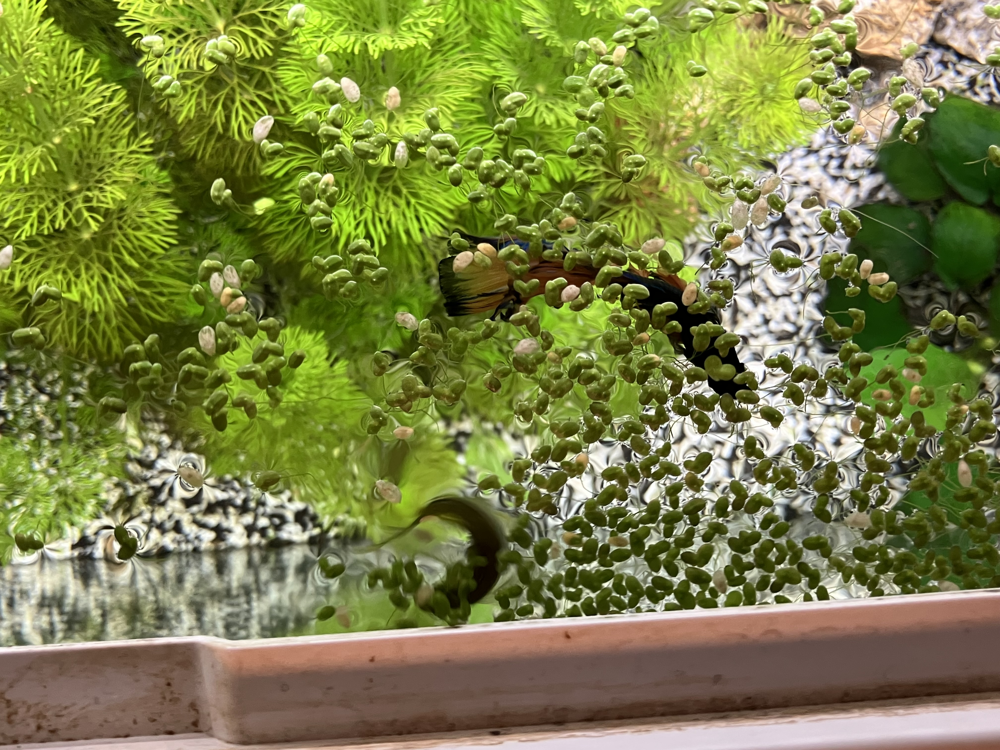
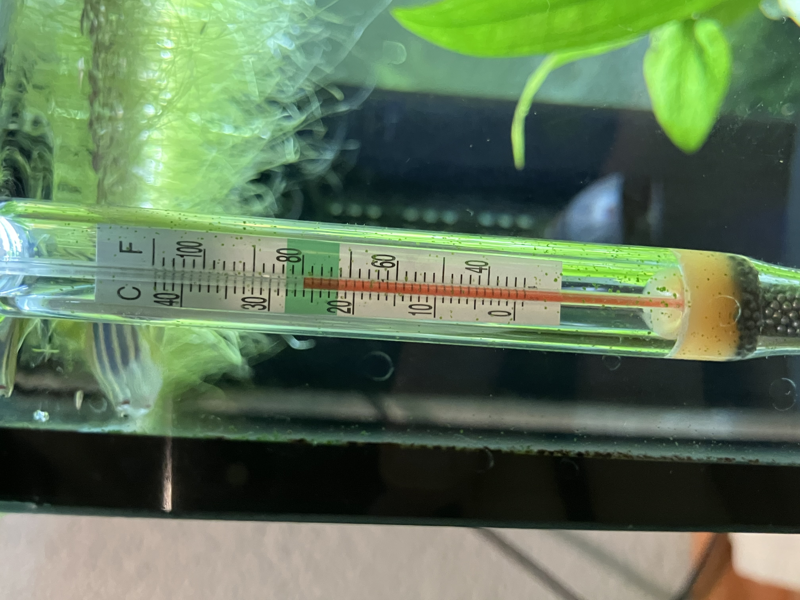

Alles über die Haltung von Kampffischen.
Größe: Ein 60-Liter-Aquarium ist ideal für einen Kampffisch. Sie mögen Platz zum Schwimmen und Verstecken.

Pflanzen, Verstecke und ein sanfter Filter sind wichtig. Sie lieben es, sich zu verstecken und die Pflanzen geben ihnen ein Gefühl von Sicherheit.

Halte das Wasser zwischen 24-28°C. Ein Heizer ist notwendig.
Kampffische brauchen sauberes Wasser. Wöchentliche Teilwasserwechsel (20-40%) sind ein Muss.
pH-Wert: Ein pH-Wert von 6,5 bis 7,5 ist ideal.
Diät: Füttere sie mit einer ausgewogenen Diät aus Pellets, die speziell für Betta-Fische formuliert sind, und ergänze sie mit gefriergetrockneten oder lebenden Leckereien wie Daphnien oder Blutwürmern.

Mengen: Füttere sie zweimal täglich in kleinen Mengen, damit sie alles in ein paar Minuten fressen.
Einzelhaltung: Kampffische sind sehr territorial und sollten allein gehalten werden. Männliche Kampffische sollten niemals zusammengehalten werden, da sie kämpfen.
Vergesellschaftung: Wenn du andere Fische hinzufügen möchtest, wähle friedliche und nicht zu kleine Fische, die nicht die Flossen des Kampffischs anknabbern.

Achte auf Anzeichen von Stress oder Krankheit: Häufige Symptome sind farbliche Veränderungen, Appetitlosigkeit oder unregelmäßiges Schwimmen. Wenn du diese Anzeichen bemerkst, überprüfe die Wasserbedingungen und konsultiere ggf. einen Experten.
Hier ist ein Link, um alles nochmal von Kampffische zu lesen und das von zooplus.